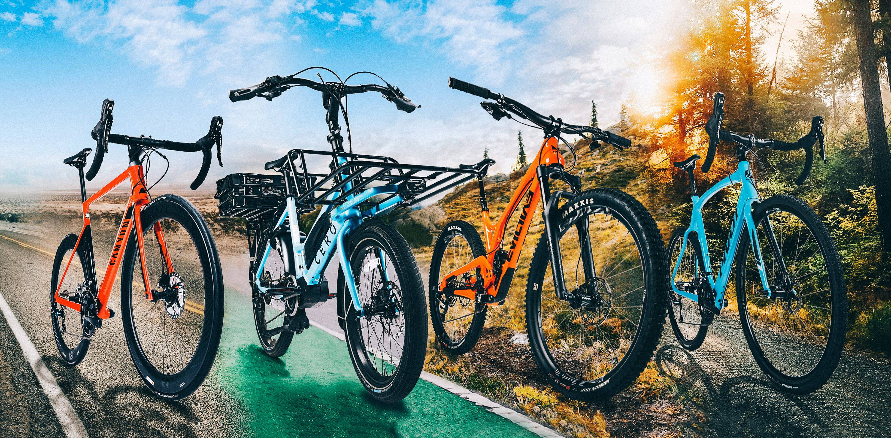

Executed a SQL data cleaning project to prepare and optimize raw datasets for analysis. Applied advanced SQL techniques, including data validation, handling missing values, and removing duplicates, to ensure data accuracy and consistency for effective reporting.

In this project, I developed an interactive Coffee Sales Dashboard using Excel, showcasing sales trends, top-performing countries, and customer insights. Integrated slicers for dynamic filtering by date, roast type, loyalty status, and package size, enabling actionable data analysis.
In this project, I created an interactive Tableau dashboard analyzing British Airways reviews. Visualized key metrics, including review sentiments, customer satisfaction trends, and regional feedback patterns, enabling actionable insights into service quality and areas of improvement.
Developed an interactive Power BI dashboard to analyze a survey of data professionals, highlighting industry trends, career preferences, and salary distributions. Leveraged advanced visuals and slicers for seamless data filtering, enabling users to uncover detailed insights effectively.

Created an Excel-based dashboard analyzing bike buyer data. Utilized pivot tables and data processing techniques to summarize key insights, including buyer demographics, purchasing trends, and preferences. Designed an interactive and visually appealing dashboard for effective decision-making